A seasonal preview
Moonlit Doorwood
Follow the crooked path from the moonlit hill to a quiet forest where one evergreen door waits.
A little curiosity goes a long way.
Reduced motion is on. The scene effects will stay still.
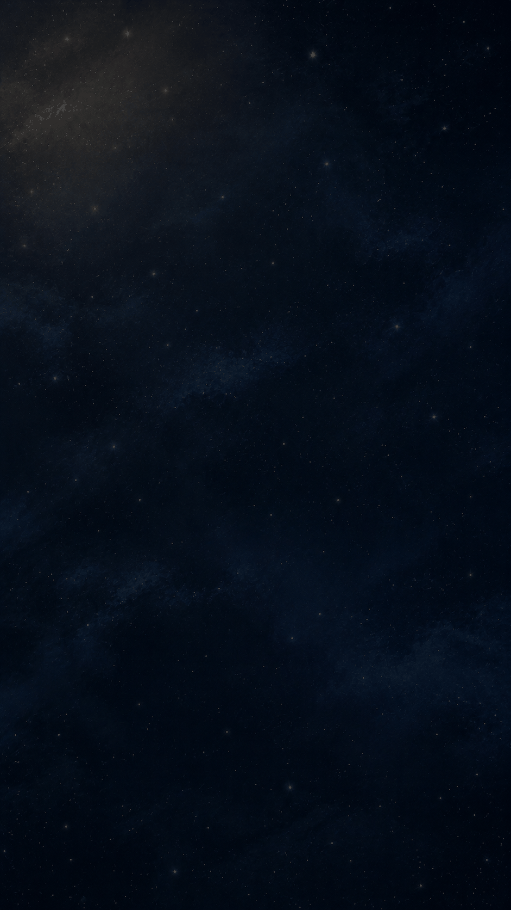
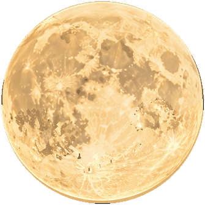
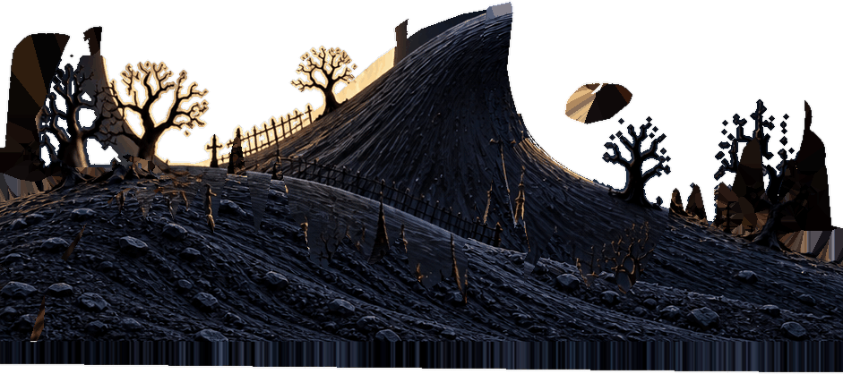
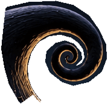
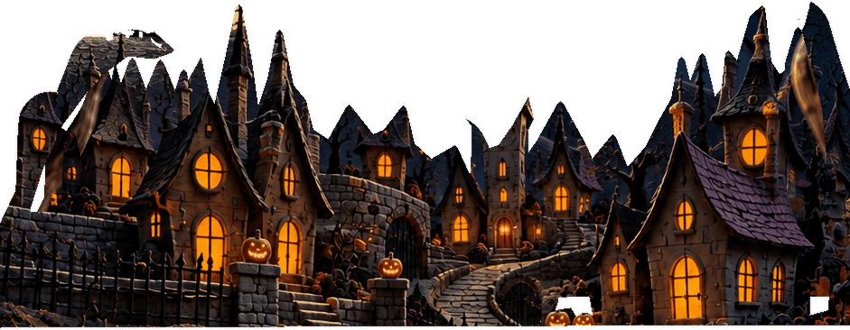
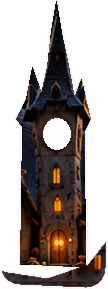
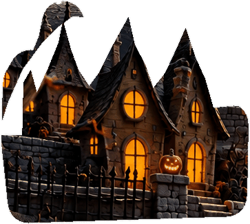
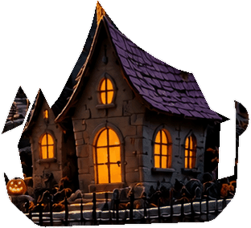
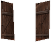
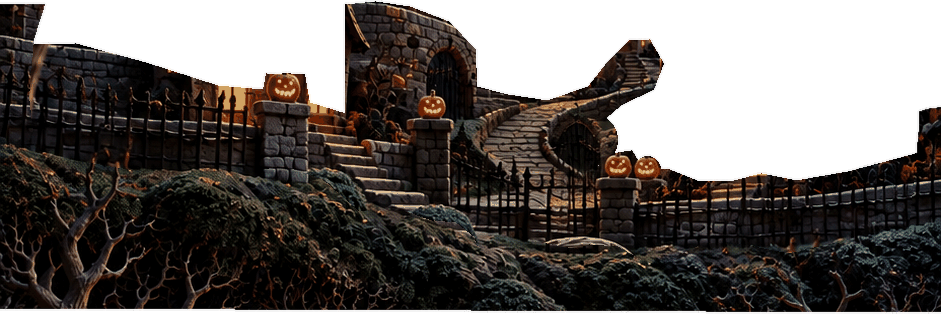
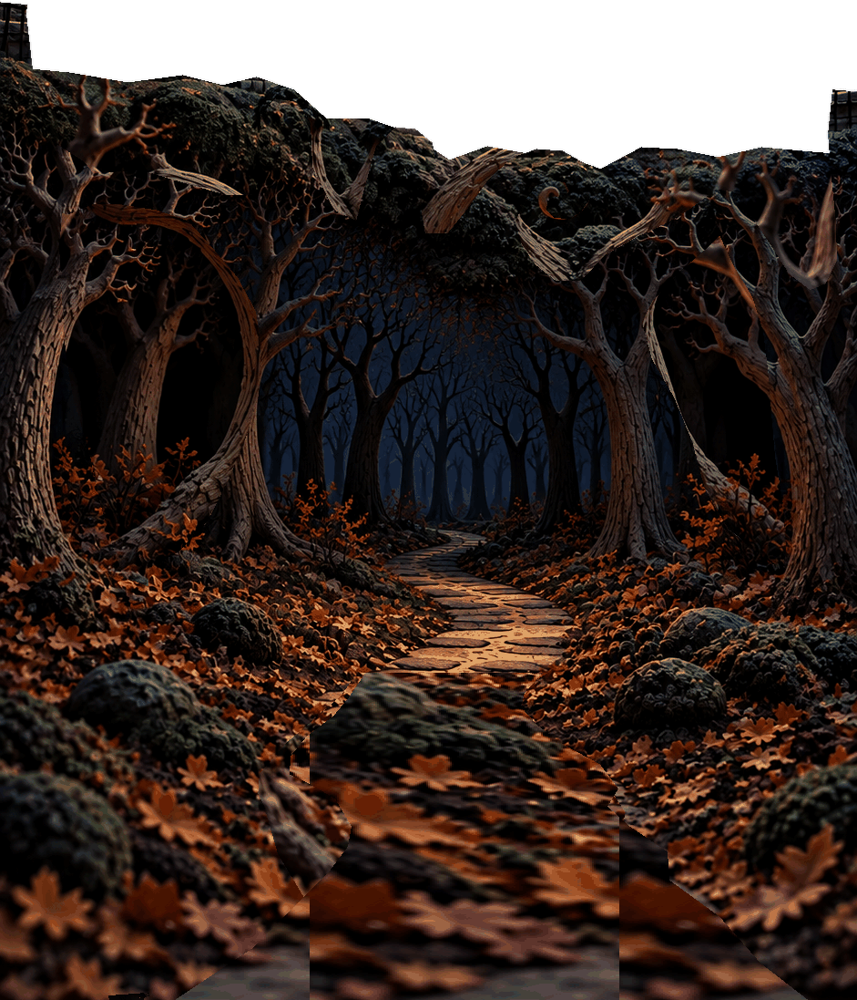
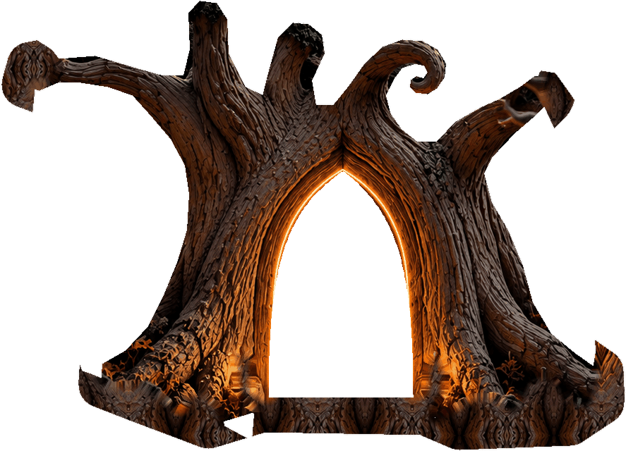
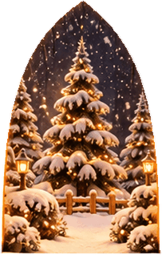
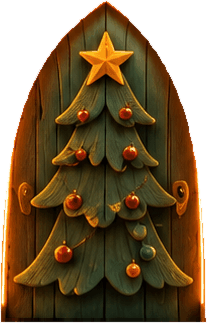
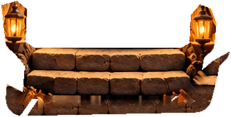
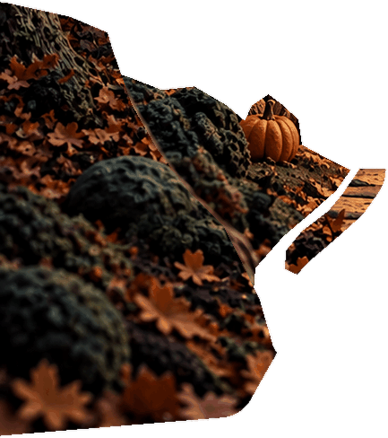
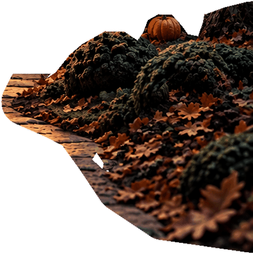
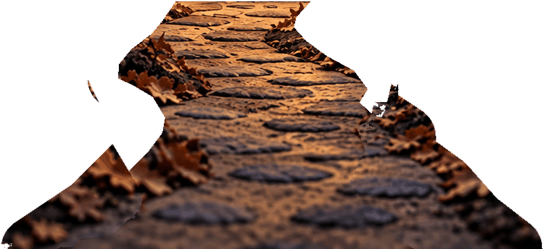
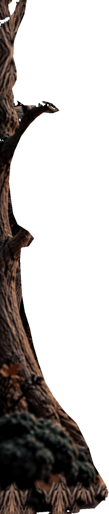
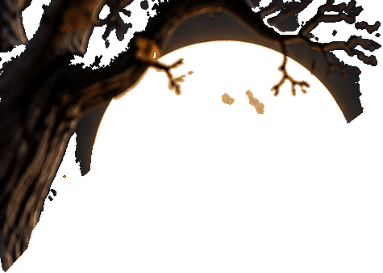
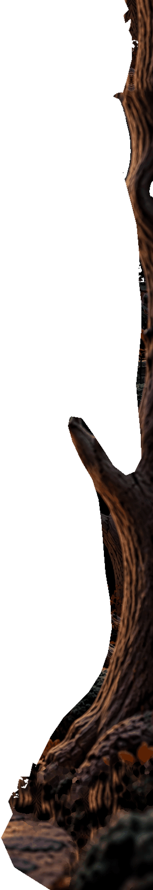
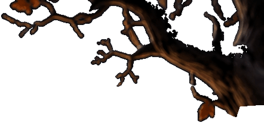
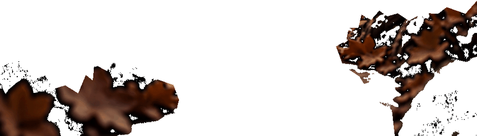